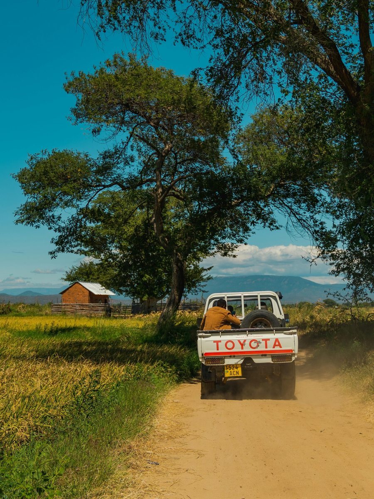
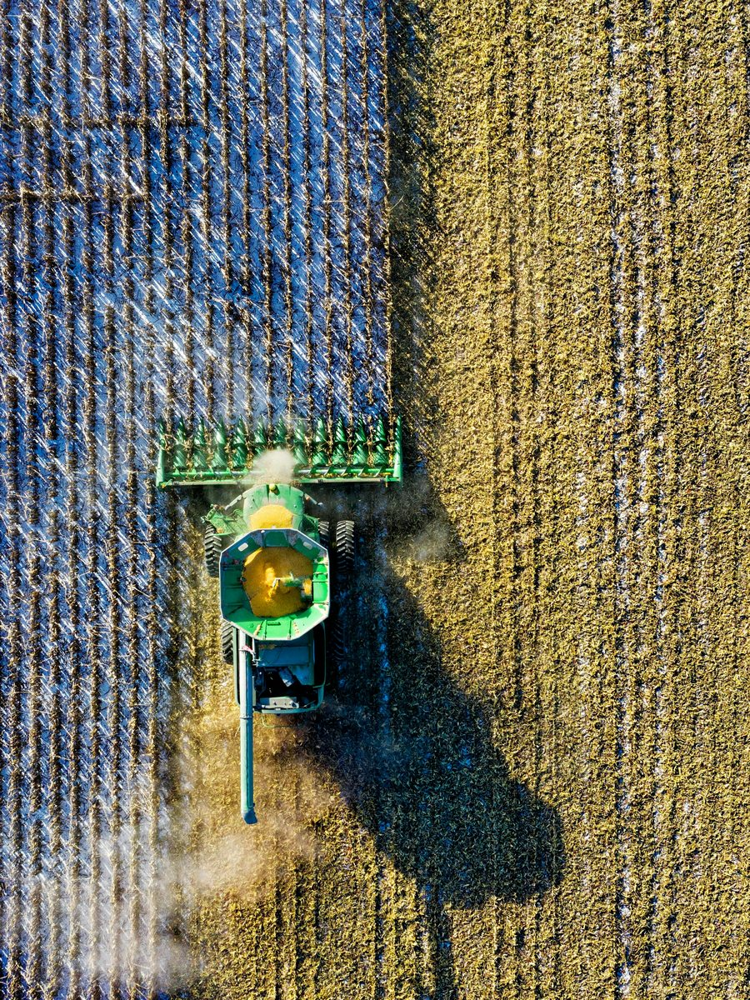

A farmer can work the same land for twenty years and still be invisible to every institution that could help.
Not because the work is small, and not because the risk is high. Because nothing about it was ever written down anywhere a bank, an insurer or a pension scheme could read. We build the four layers that change that, in the order they have to be built.

Pillar one
Infrastructure
Storage, logistics and market access. The physical layer that lets a smallholder farmer take part in organised trade at all, built so a harvest can be held, moved and sold on fair terms.

Pillar two
Data
A verified record per farmer, held in Panjiia. Registration, every transaction captured where it happens, and a profile that deepens season on season.
Pillar three
Finance
Credit before the season, assessed on evidence rather than collateral, and the institutional relationships that carry a farmer’s record into the financial system.

Pillar four
Social inclusion
Protection that holds. Insurance priced on a real production history, and a route into pension and national social protection for people the system has never counted.